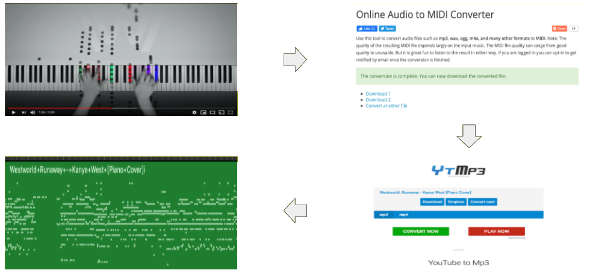

Kanye West Music Generation
By Vivek Sharath


Overview
This project explains how I trained a model to go from this into this
For details on code, please visit the GitHub Repository.
For all acknowledgements for this project, please check out the acknowledgements page.
Introduction
From the uplifting beats featured in his debut album “The College Dropout”, to the unorthodox blend of synthetics and vocals of “Graduation”, to the christian hymns of “Jesus is King”, Kanye West continues to defy established musical patterns while also creating melodies that have rocked the 21st century. In this project, we will be using RNN’s (recurrent neural networks) to generate music that aims to mimic his style.
How Does This Work?
RNN and music generation go together like peanut butter and jelly. RNN's take in sequential data (say music for example) as input and tries to look for some kind of pattern. If our model finds this underlying pattern of the sequential data, we can use the model to predict what should come next given some arbitrary starting point. In the case of music generation, we want to predict the next sound.

Piano Music
Spoiler Alert: we will be using piano covers of Kanye West's music for this project. Why? Short answer: it's easier. When it comes to piano music, it is clear which notes are being played at any given time. How do we know which notes are being played at a given time? ~cue MIDI files~. Midi files, also known as musical instrument digital interface, is essentially a sequence of notes over a time period. The image below is what a .midi file looks like.

You can think of this as the “technological†way of reading piano sheet music. The x axis (length of the song) acts as the time while the y axis (size 88 because there are 88 playable notes) lets us know which notes are being played. We can turn this into a matrix of size 88 x tn where tn is the length of the song. For example, the column t91 will tell us which of the 88 notes are being played at time step 91. Once we have our tn columns, we feed each column ti , 1 ≤ i ≤ n, into our model one at a time. Note that the vector ti can have multiple 1’s throughout the vector. One could find a way to encode this vector, but for the sake of space, inputting an 88x1 vector will work as well.

Data
This is where the fun begins. As mentioned earlier, piano covers for various Kanye West songs populate my dataset. Did I do these covers on my own? Nope. Instead, I converted piano covers of Kanye's songs on youtube to midi files. (Links to all the youtubers who supplied the beautiful covers can be found in the acknowledgements page). Once I had about 100 minutes of Kanye Piano Cover midi files, I split the data into a train set (50%), test set (25%), and validation set (25%).
Code
This is where the fun really begins. Huge huge huge thank you to James Carpenter and Prince Grover who
developed an ingenious pipeline that allows for midi files to be used in the forward and backward
steps of deep learning. This project would not exist without their code (link to their work in the github
page for this project and in the acknowledgments page).
Here is a brief overview of what our code does
- 🔢 Load in our train, test, validation sets 🔢
- 💪 Train various models using different pre-training parameters (hidden size, epochs, learning rates) 💪
- 🥇Choose the model that gave us the best validation score, and save the pre-training parameters 🥇
- 😬 Do a sanity check by testing our model against our untouched test set 😬
- 🗠Build a new model with the saved pre-training parameters ğŸ—
- 💪 Train this model with the entire dataset (train, test, valid) 💪
- 🎵😎🎵 Use this model to generate some epic tunes 🎵😎🎵
Results
Remember step 7 from above? It took several trial and errors to get anywhere near "epic". Instead of showing all 200 something trials, the following 4 tracks show the progression of my quest towards making music like Kanye. If you are a fan of scary movie soundtracks or a cacophony of sounds, you are in for a treat!
Results During Parameter Tuning
Yikes. What makes this project so hard is that relying on the loss isn't the best indicator if we are producing good music or not. After hours and hours of changing different model parameters, namely different levels of dropout and RNN architecture, I finally arrived at a generated audio clip that had a noticeable melody and was free of piano banging.
Good Sounding Result
Turn Up!
Using the "Good Sounding Generated Clip" as the underlying beat, my brother was able to add a bassline and a few other instruments to produce the following beats. Enjoy!
Beat 1: Someone's At Your Door
Beat 2: Knock off Donkey Kong